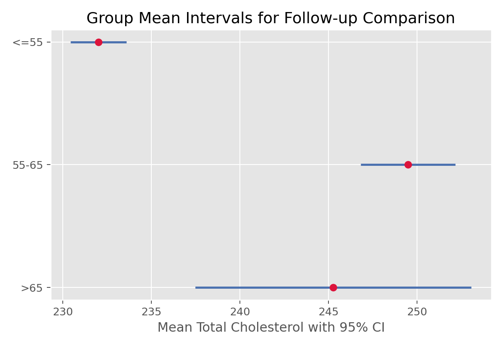

描述统计与统计推断 · 02·06
TukeyHSD多重比较
Tukey Honest Significant Difference
TukeyHSD多重比较（Tukey Honest Significant Difference）
§1
方法概览
1.1 定义
Tukey HSD 是在 ANOVA 显著之后进行所有两两组间比较的事后方法，目标是在控制家族错误率的同时找出到底哪些组不同。
1.2 它主要解决什么问题
- 研究问题：ANOVA 告诉我们“至少有差异”，Tukey HSD 告诉我们“到底哪两组有差异”。
- 适用任务：所有组间两两比较。
- 常见医学场景：三种及以上治疗方案比较后，确定具体哪两种存在均值差异。
1.3 直觉理解
如果直接做很多次 t 检验，假阳性会累积。Tukey HSD 通过提高比较阈值，把“整组两两比较”的错误率控制在预设水平内。
§2
数学形式
2.1 核心公式
$$ (\hat\alpha_i - \hat\alpha_j) \pm q_{k,n-k,1-\alpha/2}\,\hat\sigma\sqrt{\frac{1}{2}\left(\frac{1}{n_i}+\frac{1}{n_j}\right)} $$
2.2 参数或统计量含义
- $q$：studentized range 分布分位数。
- $\hat\sigma$：组内合并标准差。
- $n_i,n_j$：被比较两组样本量。
2.3 关键假设
- 基于 ANOVA 的常规前提：独立、近似正态、方差齐。
- 关注所有两两比较。
§3
数据形式与输入输出
3.1 适合的数据形式
- 自变量类型：多分类因素。
- 因变量类型：连续型。
- 数据结构：多组独立样本。
- 是否适合高维数据：不适合作为高维多结局场景的通用校正方案。
- 是否适合缺失较多数据：可用，但组间极不平衡时需谨慎。
- 是否适合删失数据：不适合。
- 是否适合重复测量数据：不适合。
3.2 示例表格
Tukey HSD 的输入数据形式与单因素 ANOVA 一致，都是“一个多分类因素 + 一个连续结局”：
| RANDID | AGE_group | TOTCHOL |
|---|---|---|
| 2448 | 1 | 195 |
| 6238 | 1 | 250 |
| 10552 | 2 | 225 |
| 14729 | 3 | 250 |
| 19539 | 2 | 235 |
区别在于：ANOVA 先回答“是否至少有一组不同”，Tukey HSD 再回答“具体哪几组不同”。
3.3 输入与产出
输入
- 输入数据：连续结局和多分类组别。
- 关键变量：组别、结局、显著性水平。
- 需要预处理的内容：通常先完成 ANOVA。
产出
- 模型对象/统计结果：每一对组别的均值差、校正后的区间和显著性判断。
- 参数估计：两两均值差。
- 预测结果：无。
- 不确定性指标：FWER 控制下的置信区间。
§4
适用场景
- 适合：ANOVA 显著后，想做全部两两均值比较。
- 不适合：只关心少数预先设定比较、分布假设明显不满足。
- 使用前需要特别检查的点：是否真的需要全部两两比较，是否已满足 ANOVA 前提。
§5
实现
常用包：
statsmodels
import pandas as pd
from statsmodels.stats.multicomp import pairwise_tukeyhsd
df = pd.DataFrame({
"value": [5.1, 5.3, 4.9, 6.0, 6.2, 5.8, 7.1, 6.9, 7.0],
"group": ["A", "A", "A", "B", "B", "B", "C", "C", "C"]
})
res = pairwise_tukeyhsd(endog=df["value"], groups=df["group"], alpha=0.05)
print(res)
常用包：
stats
df <- data.frame(
value = c(5.1, 5.3, 4.9, 6.0, 6.2, 5.8, 7.1, 6.9, 7.0),
group = factor(c("A","A","A","B","B","B","C","C","C"))
)
fit <- aov(value ~ group, data = df)
TukeyHSD(fit)
§6
结果如何解释
- 核心结果看什么：哪些组对的均值差区间不包含 0。
- 每个主要参数如何解释：均值差大小、方向和校正后显著性。
- 临床或医学意义如何表达：同时报告差值和区间，而不是只说“显著”。
- 常见误读：Tukey 结论依赖前提，不是对任意数据都稳健。
§7
推荐可视化
- 两两均值差的区间图。
- Tukey HSD summary plot。
- 各组均值加字母分组图。
7.1 图像示例
下图给出年龄组比较对应的区间图，适合作为 Tukey HSD 事后比较的展示方式。

§8
优势、局限与常见坑
优势
- 适合全体两两比较。
- 控制家族错误率。
- 输出直接可解释。
局限
- 依赖 ANOVA 类似假设。
- 若只关心少量预先比较，未必最有效率。
- 对非常不平衡设计不够灵活。
常见坑
- 在 ANOVA 不显著时仍机械做大量事后比较。
- 忽视研究问题其实只关心部分比较。
- 只报显著性，不报均值差和区间。
§9
与相近方法的区别
- 和 Bonferroni 的区别：Bonferroni 更通用但往往更保守。
- 和独立做多次 t 检验的区别：Tukey 控制了整体错误率。
- 应该如何选择：需要所有组间两两比较时，Tukey HSD 是很好的默认选择。
§10
医学研究中的典型应用
- 比较三种治疗方案两两之间的均值差。
- 比较多个分期、多个剂量组之间的连续结局。
- ANOVA 显著后的标准事后分析。
§11
相关方法
§12
参考资料
- Miller RG Jr. Simultaneous Statistical Inference. 2nd ed. Springer; 1981.
- statsmodels Developers.
statsmodels.stats.multicomp.pairwise_tukeyhsd. statsmodels API Reference. https://www.statsmodels.org/stable/generated/statsmodels.stats.multicomp.pairwise_tukeyhsd.html （访问日期：2026-07-02） - R Core Team.
TukeyHSD. R Manual. https://stat.ethz.ch/R-manual/R-devel/library/stats/html/TukeyHSD.html （访问日期：2026-07-02）
— 黑盒词典 · 02·06 —